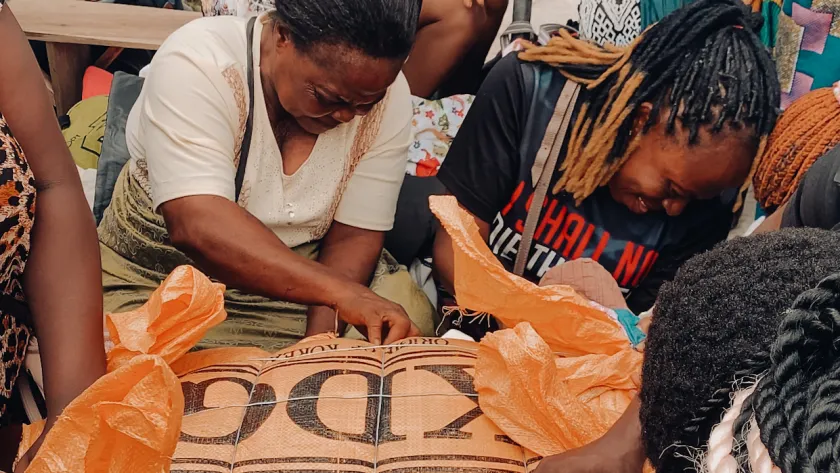

Home
Markets
Ariaria International Market, located in Aba, is one of the largest and most prominent markets in West Africa. It is often referred to as the "China of Africa" due to its vast range of goods and its reputation for producing high-quality, affordable products. The market is a central hub for trade and commerce, attracting buyers and sellers from across Nigeria and neighboring countries. The Market spans a vast area, comprising numerous sections and stalls that cover different types of goods. It is estimated to house over 37,000 shops and stalls. The market is famous for its wide variety of fabrics, clothing, and fashion accessories. You can find both locally produced and imported textiles. It is renowned for its footwear section, where a significant portion of Aba's shoe production is sold. This includes a variety of shoes, sandals, and slippers. Leather Goods: The market offers a range of leather products, including bags, belts, wallets, and other accessories.
Cloth Industries
The cloth industry in Aba, Abia State, Nigeria, is another cornerstone of the city's economic landscape. Aba is renowned for its vibrant textile and garment sector, producing a wide range of fabrics and clothing items that cater to both local and international markets. The industry produces a variety of textiles and garments, including traditional attires, casual wear, formal wear, uniforms, and bespoke tailoring. Popular items include Ankara fabrics, lace, and custom-made outfits. Aba is home to numerous skilled tailors, seamstresses, and designers known for their creativity and craftsmanship. Many of these professionals have gained their expertise through apprenticeships and extensive hands-on experience. The cloth industry in Aba is known for its affordability, offering quality products at competitive prices. This cost advantage makes Aba's textiles and garments accessible to a broad customer base.
Made In Aba Shoes
The Aba shoe industry is renowned for its large-scale production of various types of footwearis a major hub for shoe production in Nigeria and Africa. The industry produces millions of pairs of shoes annually, catering to both local and international markets. The shoes made in Aba include formal shoes, casual shoes, slippers, sandals, boots, and specialized footwear. The range caters to men, women, and children. Aba shoes are known for being affordable without compromising on quality. The lower production costs compared to other regions make Aba footwear competitive in various markets. While a significant portion of production is consumed locally, Aba shoes are also exported to neighboring African countries and beyond. This export activity contributes significantly to Nigeria's economy. Increasingly, the industry is adopting modern technologies and machinery to enhance production efficiency and quality. This includes the use of automated cutting and sewing machines, as well as computer-aided design (CAD) software. Environmental Considerations: